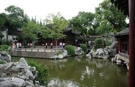
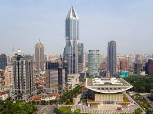
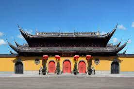
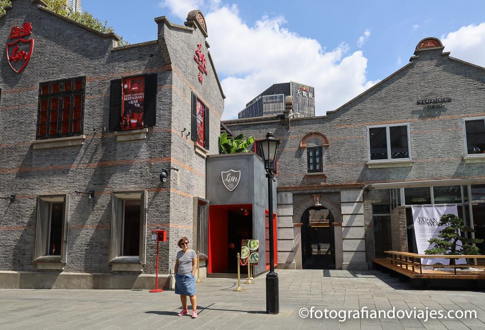

VIAJE esados unidos
Este viaje consistira en realizar una ruta por los sitios mas emblematicos y interesantes de Estados unidos
Este viaje consistira en realizar una ruta por los sitios mas emblematicos y interesantes de Estados unidos
El Jardín Yuyuan es otro lugar imprescindible de Shanghai. Construido durante la dinastía Ming en el siglo XVI a imagen y semejanza de los jardines imperiales, hoy es un remanso de tranquilidad en medio de la urbe, salvo por los turistas que se amontonan, claro. [Horarios y precios]. En las inmediaciones, por cierto, encontraréis muchas paraditas de comerciantes donde se puede practicar el famoso regateo.
La Plaza del Pueblo (People’s Square) es la plaza más famosa de la ciudad y centro neurálgico de la misma. Abarca una gran extensión de terreno y en su interior o sus inmediaciones podemos encontrar algunos de los edificios más importantes de la ciudad
El Templo del Buda de Jade es el más célebre templo budista de la ciudad. Construido en 1882, contiene varias estatuas notables de Buda, destacando el Buda Sentado, de 3 toneladas y casi 2 metros
La Concesión Francesa fue un área ocupada por los franceses hasta 1946. Hoy esta zona de Shanghái es un coqueto barrio residencial que choca con la arquitectura del resto de la ciudad. Aquí aún puede verse alguna iglesia católica y si uno hace el esfuerzo puede sentirse como si estuviera en París por un momento.
